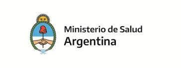

Ministerio de Salud de la Nacion
Podes Visitar la Pagina Web del Ministerio donde encontraras informacion muy importante sobre los
cuidados y los pasos a realizar en
caso de presentar sintomas,dudas,etc :Ministerio de
Salud
0800 Salud Responde
Podés llamar de lunes a viernes de 9 a 21 h y los fines de semana y feriados de 9 a 18 h.
Consultores y consultoras especialmente capacitados te orientan y asesoran para que tomes decisiones
sobre tu salud.
De ser necesario, te derivan a los centros de salud y hospitales públicos más cercanos.
Atienden consultas sobre temas tales como gripe, dengue, chagas, donación de sangre, tabaquismo,
vacunas, VIH-Sida y salud sexual entre otros.
También te informan sobre el marco legal, tus derechos y las obligaciones del sistema público de salud.
Tu llamado es confidencial y personalizado.
0800-222-1002
Opcion 1 : CORONAVIRUS
Ministerio de Salud de la Provincia de Cordoba

Podes visitar la pagina Web del Ministerio, para asi poder sacarte cada una de tus dudas
y realizar las consultas correspondientes: Ministerio de Salud de
Cordoba
TELEFONO
Podes comunicarte con el misiterio llamando al (0351) 4688688
Hospitales Publicos en Cordoba
Telefonos de los Hospitales publicos de la Provincia de Cordoba:
Hospital Infantil (guardia) 433-5456/5453/5458
Hospital de Urgencias 434-1201, 433-1519/ 2740/ 2759/ 427-6200
Hospital Infantil Municipal 433-5452/ 5456/5453/5458
Hospital Córdoba 434-9002/03/04/05/06
Hospital San Roque 434-8774
Hospital Rawson 434-8754/55/56/57/58
Hospital Tránsito Cáceres de Allende 434-2402/04/08/10/15S
Hospital de Niños 458-6400
Hospital Misericordia 434-4107/08/434-4111
Hospital Materno Provincial 434-8760/62/66
Nacional de Clínicas 433-7014/15/16/17/18/51
Otros Numeros Importantes
107: Emergencias Médicas
134: Para denunciar a quienes violen la cuarentena, comunicate con el Ministerio de Seguridad al número
gratuito 134.
Whatsapp y Facebook Messenger
Sumamos dos chats para que encuentres respuestas a las preguntas más frecuentes y recibas consejos de
prevención.
Whatsapp: escribí "Hola" (sin comillas) al número +54 9 11 2256-0566 y comenzá a chatear.
Facebook Messenger: en tu celular, abrí la aplicación Messenger e ingresá a la cuenta msalnacion. Si
estás en una computadora, ingresá a Facebook con tu
cuenta de Facebook.
Videollamada para personas sordas e hipoacúsicas
La Agencia Nacional de Discapacidad ofrece un servicio exclusivo para personas con discapacidad auditiva,
el número 11-5728-4011, disponible de lunes a viernes de 10 a 15 horas.
Asistencia a los argentinos en el exterior
Escribinos al correo electrónico correspondiente a la región donde estás:
Europa: covideuropa@cancilleria.gob.ar
Estados Unidos y Canadá: covidnorte@cancilleria.gob.ar
América Central, Caribe y México: covidcentral@cancilleria.gob.ar
America del Sur: covidsur@cancilleria.gob.ar
Asia, Oceanía, Africa y Medio Oriente: covidrestmun@cancilleria.gob.ar